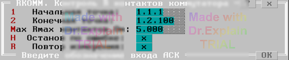

3.12 RKOMM. Контроль сопротивления контактов реле коммутатора
Утилита используется для контроля сопротивлений контактов коммутатора.
Утилита предоставляет меню, показанном на рисунке:

Опция "Начальная точка" задает адрес начальной точки диапазона проверяемых точек.
Опция "Конечная точка" задает адрес конечной точки диапазона проверяемых точек.
Опция "Rmax контактов,Ом" задает максимально допустимое значение сопротивления контактов, превышение которого будет считаться ошибкой.
Алгоритм выполнения виден из протокола выполнения (получен в холостом режиме).
Подготовка к выполнению
$DEV Сброс всех точек со всех шин
$DEV АЦП: Реж=R дU=2В I=20мА Um=4В Ку=5 Вкл дR=100 Ом (110 Ом)
$DEV АЦП на: '+'/A1 '-'/B1
$DEV ПИТ: измерение д.быть Стаб=U Стаб=U
Для каждой точки выполняются действия:
$TST1 1.1.1 к шинам A1,B1 {begin
$DEV 1.1.1 на: A1,B1
$DEV АЦП: измерение R Rизм=0.0Ом (Rф=1.5 Ом)
$DEV 1.1.1 на: НетШин (откл от A1,B1)
$DEV ПИТ: измерение д.быть Стаб=U Стаб=U
$TST1 1.1.1 к шинам A1,B1 }end = 0.0Ом
После проверки всех точек предоставляется меню, см. п. 6.3.